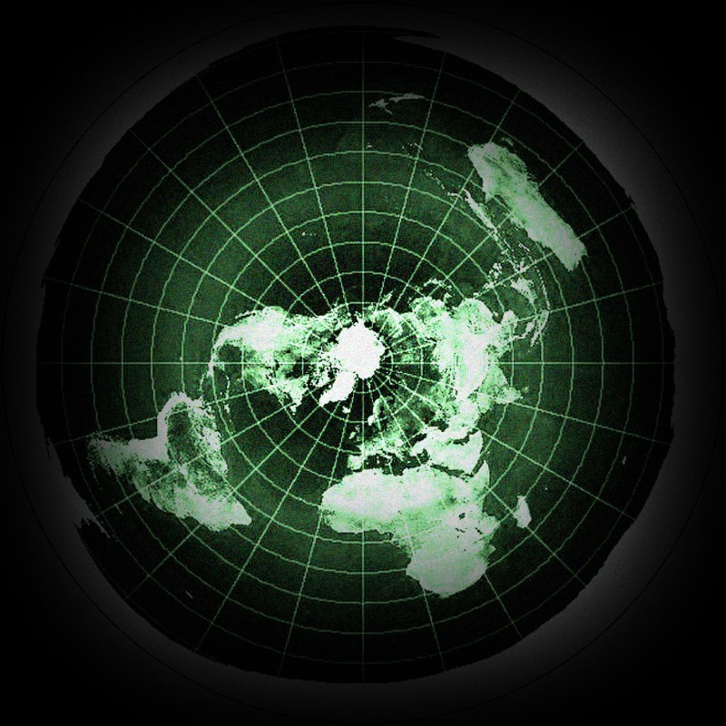
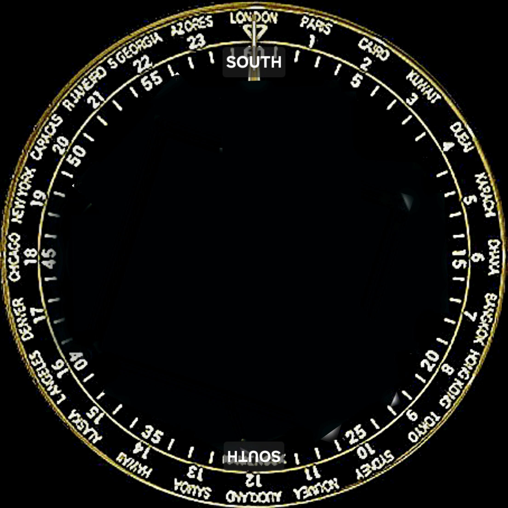

Réglages partagés (même origine) : phase de Lune, latitude Soleil, latitude Lune. La Lune tourne automatiquement (cycle des phases 29,53 jours). Le client écoute ces paramètres en direct.


N
S
E
O
Visibilité Lune : 0%(100 % quand Jaune↔Bleu = 180°)